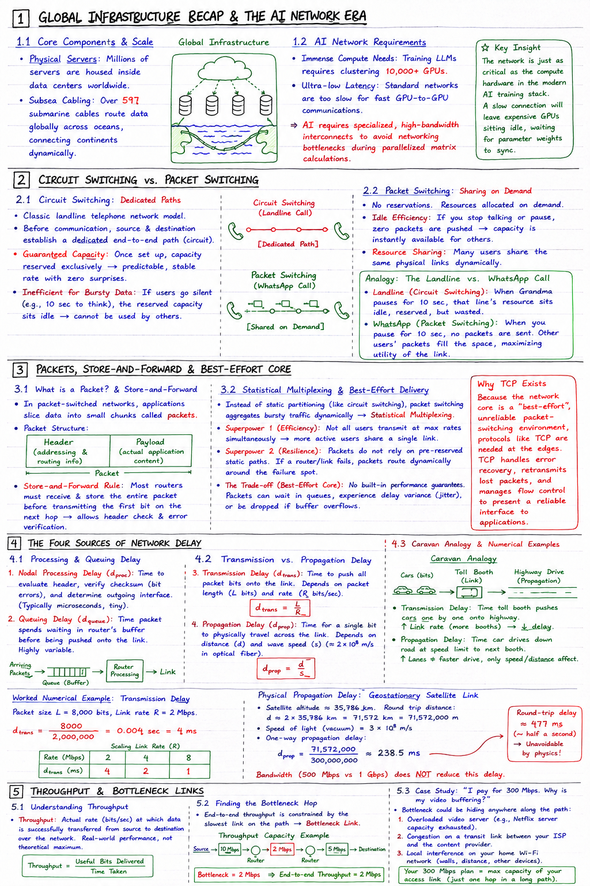

Short Notes & Visual Summary
Handwritten / quick summary notes for Lecture 02:

Click image to open high-resolution version in new tab
Global Infrastructure Recap & The AI Network Era
1.1 Core Components & Scale
The global infrastructure is massive and complex. To recap the physical scale of the "Cloud":
- Physical Servers: Millions of servers are housed inside data centers worldwide, powering applications.
- Subsea Cabling: Over 597 submarine cables route data globally across oceans, connecting continents dynamically.
1.2 AI Network Requirements
Modern Artificial Intelligence (AI) workloads demand a massive shift in how networks are structured:
- Immense Compute Needs: Training large language models (LLMs) requires clustering 10,000+ GPUs.
- Ultra-low Latency: Standard networks are too slow for fast GPU-to-GPU communications. AI requires specialized, high-bandwidth interconnects to avoid networking bottlenecks during parallelized matrix calculations.
The network is just as critical as the compute hardware in the modern AI training stack. A slow connection will leave expensive GPUs sitting idle, waiting for parameter weights to sync.
Circuit Switching vs. Packet Switching
2.1 Circuit Switching: Dedicated Paths
This is the classic landline telephone network model. Before any communication begins, the source and destination must establish a dedicated end-to-end path (circuit) through the network core.
- Guaranteed Capacity: Once the circuit is set up, the allocated capacity is reserved exclusively. This ensures a predictable, stable transmission rate with zero performance surprises.
- Inefficient for Bursty Data: If the users go silent (e.g., pausing for 10 seconds to think), the reserved circuit capacity sits idle. It cannot be utilized by any other user on the network, leading to wasted bandwidth.
2.2 Packet Switching: Sharing on Demand
This is the model used by WhatsApp calls and the modern internet. No reservations are made. Instead, resources are allocated on demand.
- Idle Efficiency: If you stop talking or pause data transmission, zero packets are pushed onto the wire. That capacity is instantly available for other users to send their packets.
- Resource Sharing: Many users share the same physical links dynamically.
- Landline (Circuit Switching): When Grandma pauses for 10 seconds, that line's resource sits idle, reserved, but wasted.
- WhatsApp (Packet Switching): When you pause for 10 seconds, no packets are sent. Other users' packets fill the space, maximizing the utility of the link.
Packets, Store-and-Forward & Best-Effort Core
3.1 What is a Packet? & Store-and-Forward
In packet-switched networks, applications slice data (web pages, photos, audio clips) into small, manageable chunks called packets.
- Packet Structure: A packet contains a Header (addressing & routing metadata) and a Payload (the actual application content).
- Store-and-Forward Rule: Most packet routers operate on a store-and-forward policy. A router must receive and store the entire packet before it starts transmitting the first bit of that packet onto the next hop. This allows the router to check the header and verify there are no transmission errors before forwarding.
3.2 Statistical Multiplexing & Best-Effort Delivery
Rather than partitioning link capacity statically (like circuit switching), packet switching aggregates bursty traffic dynamically. This is known as Statistical Multiplexing.
- Superpower 1: Efficiency: Networks leverage the statistical reality that not all users transmit at maximum rates simultaneously, allowing more active users to share a single link.
- Superpower 2: Resilience: Packets do not rely on pre-reserved static paths. If a router or intermediate link fails, packets can simply route dynamically around the failure spot.
- The Trade-off (Best-Effort Core): Packet switching offers no built-in performance guarantees. Packets can wait in buffer queues, experience delay variance (jitter), or be dropped entirely if a router's buffer overflows.
Because the network core is a "best-effort", unreliable packet-switching environment, protocols like TCP (Transmission Control Protocol) are needed at the edges. TCP handles error recovery, retransmits lost packets, and manages flow control to present a reliable interface to applications.
The Four Sources of Network Delay
4.1 Processing & Queuing Delay
Every packet traversing a network router experiences four distinct delay components:
- Nodal Processing Delay (dproc): The time a router takes to evaluate the packet header, verify the checksum for bit errors, and determine the appropriate outgoing interface. (Typically microseconds, tiny).
- Queuing Delay (dqueue): The time a packet spends waiting in a router's buffer queue before being pushed onto the link. This delay is highly variable and depends on the amount of traffic already waiting.
4.2 Transmission vs. Propagation Delay
These two delays are often confused but are physically distinct:
- Transmission Delay (dtrans): The time required to push all the packet's bits onto the physical transmission link. It depends on packet length (L bits) and transmission rate (R bits/sec).
dtrans = L / R
- Propagation Delay (dprop): The time required for a single bit to physically travel from one end of the physical link to the other. It depends on the link distance (d) and the wave propagation speed (s) of the physical medium (typically ~ 2 × 108 m/s in optical fiber).
dprop = d / s
4.3 Caravan Analogy & Numerical Examples
- Caravan of Cars: Analogous to a packet (each car represents a single bit).
- Toll Booth: The transmission link. The booth must process each car one by one and push them onto the highway. This is Transmission Delay. Doubling the booths (increasing the link rate) processes cars faster.
- Highway Drive: The physical link. The time a car spends driving down the road at the speed limit to the next toll booth is Propagation Delay. Adding lanes does not make a single car drive faster; only the speed limit or a shorter distance can reduce this time.
Worked Numerical Example: Transmission Delay
Compute the transmission delay (dtrans) for a packet size L = 8,000 bits on a link with bandwidth R = 2 Mbps:
If we scale the link rate (R):
- At 2 Mbps: 4 ms
- At 4 Mbps: 2 ms
- At 8 Mbps: 1 ms
Physical Propagation Delay: Geostationary Satellite Link
Consider a geostationary satellite link operating at a fast 500 Mbps. Even though the link rate is high, live voice calls experience a noticeable delay (~half a second lag).
The Physics: A geostationary satellite orbits roughly 35,786 km above the Earth. A signal must travel up to the satellite and back down, totaling: Distance d ≈ 2 × 35,786 km = 71,572 km
Traveling at the speed of light (3 × 108 m/s in vacuum):
This results in an unavoidable ~477 ms round-trip propagation delay, purely constrained by the laws of physics, regardless of the bandwidth (e.g., 500 Mbps vs 1 Gbps).
Throughput & Bottleneck Links
5.1 Understanding Throughput
Throughput is the actual rate (in bits/sec) at which data is successfully transferred from the source to the destination over the network. This is the real-world performance value rather than the theoretical maximum limit.
5.2 Finding the Bottleneck Hop
For an end-to-end network path, the total throughput is constrained by the slowest link on that path. This is referred to as the Bottleneck Link.
Consider a path consisting of three consecutive links:
The middle link acts as the bottleneck. The end-to-end throughput is capped at 2 Mbps, regardless of the faster speeds available on the other hops.
Case Study: "I pay for 300 Mbps. Why is my video buffering?"
When your ISP plan advertises 300 Mbps but a streaming video is stuttering, the bottleneck could be hiding anywhere along the path:
- An overloaded video server (e.g., Netflix server capacity exhausted).
- Congestion on a transit link between your ISP and the content provider.
- Local interference on your home Wi-Fi network (walls, distance, other devices).
Your 300 Mbps subscription only represents the maximum capacity of your access link, which is just a single hop in a long end-to-end path.
Original PDF Notes
Below is the original PDF document for your reference: